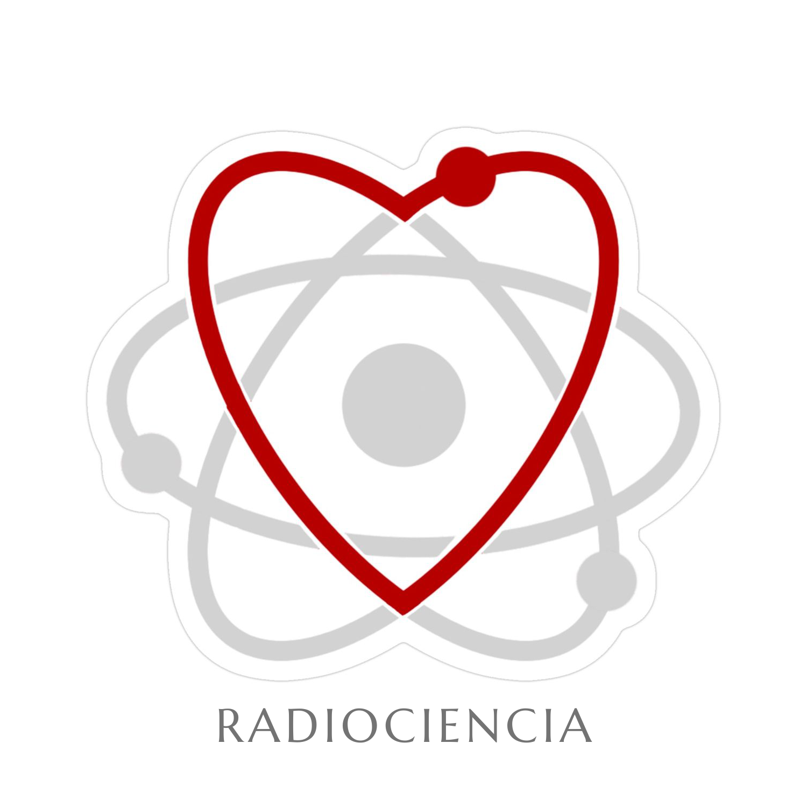

Un proyecto con causa y ambición
Este sitio forma parte de la propuesta “Radiociencia: física con prisa”, inscrita en la categoría Gigante de la Innovación del Premio Estatal de la Juventud Aguascalientes 2025.
Radiociencia es una iniciativa individual que nace del deseo de cambiar la manera en que la sociedad entiende la radiación: no como un concepto temido, sino como una herramienta que puede curar, diagnosticar, educar y generar esperanza.
La ciencia debe servir, tocar vidas y educar.
Su objetivo es ofrecer información clara y útil a quienes enfrentan procesos como el cáncer. A través de un lenguaje accesible, se busca acompañar a pacientes y familias, responder dudas reales y mostrar cómo la radiación también puede ser parte de la vida, no del miedo.
- Fusiona física médica, tecnología y divulgación científica
- Tiene una visión social, educativa y transformadora.
- Apuesta por una ciencia que acompaña, guía y cuida a las personas.
- Brinda herramientas claras a pacientes, familias y sociedad en general, sin tecnicismos vacíos.
Este proyecto se mantiene actualizado con los avances en radioterapia, imagenología y física médica, con el fin de acercar ese conocimiento a quienes más lo necesitan. Al mismo tiempo, integra aportaciones propias sobre investigación, diseño y desarrollo de nuevos materiales, exploración de herramientas y análisis adaptados a las necesidades específicas de la región.
Agosto 2025.
pacientes con cáncer
reciben radioterapia
abandonan el tratamiento
por desinformación
de la población no cuenta con
diagnostico temprano
pacientes mueren al año por
desigualdades, no por el cáncer
Anatomía del cáncer
Conocer para cuidar


Cáncer en números
Datos clave sobre el cáncer en la región y el mundo, con foco en jóvenes y mujeres.

Señales y síntomas
Aprende a identificar las señales tempranas del cáncer y cuándo acudir al médico.


La inteligencia artificial en la detección temprana
A lo largo de los años, el diagnóstico temprano se ha consolidado como uno de los pilares más efectivos en la lucha contra el cáncer. Cuando se detecta en etapas iniciales, las probabilidades de tratamiento exitoso y supervivencia aumentan exponencialmente.
La implementación de tecnologías como la inteligencia artificial, la biopsia líquida y la imagenología molecular ha revolucionado el cribado de múltiples tipos de cáncer, desde el de mama hasta el de pulmón. Sin embargo, no solo se trata de máquinas: la educación comunitaria, el acceso equitativo a pruebas preventivas y el conocimiento de síntomas tempranos son igual de cruciales. A veces, una simple revisión a tiempo puede salvar una vida.
-
Analiza miles de imágenes médicas en segundos. - Detecta patrones sutiles invisibles al ojo humano..
- Reduce errores y acelera el diagnóstico.

La oncología de precisión permite adaptar la terapia al perfil genético del tumor.
Ya no se trata solo de atacar el tumor, sino de entenderlo. Las terapias de precisión han cambiado el paradigma del tratamiento oncológico: ahora es posible identificar mutaciones específicas en el ADN de cada paciente y diseñar fármacos dirigidos que interfieren solo con las células tumorales.
Esta medicina personalizada no solo incrementa la efectividad del tratamiento, sino que minimiza los efectos secundarios. Además, en la actualidad se están desarrollando terapias basadas en ARN, anticuerpos monoclonales y CAR-T, que representan una revolución biotecnológica. El futuro del tratamiento del cáncer es tan único como el paciente que lo enfrenta.
- Se analiza el ADN del cáncer.
- Se elige el fármaco más efectivo.
- Se evitan tratamientos innecesarios.

La tecnología moderna ha revolucionado el uso de la radiación en medicina.
La radioterapia moderna ha superado el estigma de ser solo “rayos que queman”. Hoy hablamos de técnicas de alta precisión como la radioterapia conformacional, la radiocirugía estereotáxica y la terapia con protones.
- Guiado por imagen en tiempo real.
- Alta precisión submilimétrica.
- Menos efectos secundarios.
Estas estrategias permiten dirigir la dosis exacta de radiación al tumor, protegiendo al máximo los tejidos sanos circundantes. Incluso existen estudios sobre radioterapia adaptativa en tiempo real, donde las imágenes se actualizan durante la sesión para corregir movimientos corporales o cambios en el tumor. La física y la medicina convergen aquí con un objetivo común: curar sin destruir.

Vacunas Preventivas: ciencia que protege antes del inicio
No todos los cánceres se pueden evitar, pero algunos sí. Las vacunas profilácticas como las del virus del papiloma humano (VPH) y la hepatitis B han demostrado reducir significativamente la incidencia de cánceres como el cervicouterino y el hepático.
Más allá de prevenir infecciones, estas vacunas bloquean la cadena que lleva del virus al tumor. Además, se están desarrollando vacunas terapéuticas que entrenan al sistema inmune para reconocer y atacar células tumorales. Vacunar hoy es proteger el futuro.
- La del VPH previene cáncer cervicouterino.
- Se investiga una para el cáncer de pulmón.
- Se desarrollan vacunas terapéuticas.

La historia del cáncer:
Cómo ha evolucionado nuestro conocimiento sobre esta enfermedad a lo largo del tiempo.
Primeros registros del cáncer (aprox. 3000 a.C.)
Los papiros egipcios, como el de Edwin Smith, documentaron casos de tumores en los senos. El término “cáncer” aún no existía, pero ya se observaba la enfermedad y se intentaban tratamientos rudimentarios, como la cauterización.
El nombre “cáncer” (siglo V a.C.)
El médico griego Hipócrates utilizó los términos carcinos y carcinoma (cangrejo en griego) para describir tumores con ramificaciones. Este término dio origen a la palabra “cáncer” que usamos hoy.
Descubrimiento del papel de la cirugía (siglo XIX)
En el siglo XIX, la cirugía comenzó a consolidarse como un método eficaz para extirpar tumores localizados. La mejora en técnicas anestésicas e higiénicas permitió intervenciones más seguras.
La radiactividad como tratamiento (1898–1900s)
Tras descubrir el radio, Marie y Pierre Curie abrieron la puerta a la radioterapia. Pronto se empezó a aplicar radiación ionizante para destruir células cancerosas, especialmente en cánceres de piel y cuello uterino.
La quimioterapia moderna (1940s)
Durante la Segunda Guerra Mundial, se descubrió que el gas mostaza podía detener la proliferación celular. Esto llevó al desarrollo de las primeras drogas quimioterapéuticas, como la mustina, marcando el inicio de la quimioterapia.
Medicina personalizada y terapias dirigidas (siglo XXI)
El avance en genómica y biotecnología ha permitido desarrollar terapias dirigidas según el perfil genético de cada tumor. Es el nacimiento de la medicina de precisión en oncología.
Portfolio
La ciencia que trata de eliminar el cancer
- Todo
- Herramientas médicas
- Radiación y mitos
- Ciencia y esperanza
- Avances personales


{kind=link}
{kind=link}
{kind=link}
{kind=link}
{kind=link}
{kind=link}
{kind=link}
{kind=link}
Team
CHECK OUR TEAM

Walter White
Chief Executive Officer
Sarah Jhonson
Product Manager
William Anderson
CTOContact
Necessitatibus eius consequatur
Address
A108 Adam Street, New York, NY 535022
Call Us
+1 5589 55488 55
Email Us
info@example.com